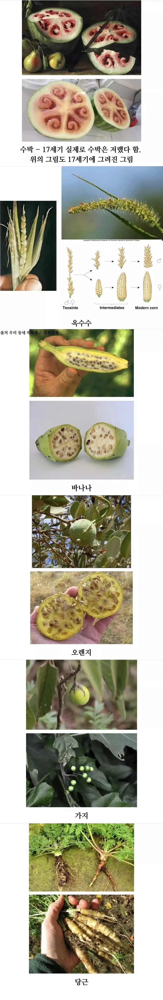

https://www.fmkorea.com/best/10285753051

개량되기전 식량들이라고 함
https://www.fmkorea.com/best/10285753051

개량되기전 식량들이라고 함
가지초밥 무봐라 디진다
썰어서 계란 묻혀서 구우면 밥도둑이야
질소말고 인광석이 핵심이던데 중국은 5프로매장량밖에없어서 수출중단한다했고 저 무슨 70퍼 매장량가진 나라에서 가져와야된다드만
대부분의 선진국에서 재배되는 거의 모든 밭 옥수수(옥수수)는 잡종 강세를 보인다. 현대 옥수수 잡종은 재래 품종보다 훨씬 높은 수확량을 보이며 비료에 더 잘 반응한다.
(중략)
옥수수 잡종 강세는 1879년에 찰스 다윈의 권유로 시작된 연구를 바탕으로 미시간 주립 대학교의 윌리엄 제임스 빌 박사가 잡종 옥수수를 발명한 후 20세기 초 조지 H. 슐과 에드워드 M. 이스트에 의해 유명하게 입증되었다.
- 위키피디아 <잡종 강세> 발췌.
세상엔 잼난거 참 많은거 같아.
아즈텍 유적지 가면 옥수수 개량 연구했던 유적 있다더라
오... 찾아바바야징. 정.보추!
ai가 지배하는 세상이 되면 인간도 저렇게 되는거 아님?
매트릭스처럼 되는거면 기초대사량이 높은 인간들만 취사선택 되서 기계의 보살핌이 없으면 바로 굶어죽을지도 모르겠다
지금 식물들이 인간의 보살핌이 없으면 병충해에 죽어 나자빠지는것처럼
효율이 좆망이었네
지금 같이 유통이나 운송 산업도 발달 안됐으니 농사 망하면 진짜 단체로 굶어죽는 마을도 많았을듯
이야 뭐 저런걸로 요리를 해먹었다는거아니야
개량은 너떻게 라는거짇ㄷㄷㄷ
먹어보고 맛있던 놈 튼실한 놈 맘에드는 놈 씨앗만 다시 재배 무한 반복
감자 고구마 어디갔어
남미에 있었어!
수박은 진짜 저주받은 과일처럼 생겼네
악마의열매
세종대왕 수박을 몰래 먹다가 죽기직전까지 곤장 맞는 놈이 있었지.
저주받았네
사실관계를 보면 그냥 수박 훔쳐먹은 건데 명분상으로는 왕의 재산을 훔친 죄라 죽을 죄가 맞음
2번 일어났는데 한놈은 맞을만했고 두번째놈은 '수박이 상했네 버릴거면 나 줘라'해서 가져갔다가
전례가 있다보니 '이새끼들이 왕이 쥬스로 보여?!!'해서 좆됨
자연은 냉정한데 무조건 상대방에게만 좋게 진화 했을리 없지
옛날에는 어케 먹고살았냐
환고포증있는놈들은 굶어죽었겠네
그런 거 없음
환공포증 같은건 없음
환공포증은 없대
저런거 징그러워 하는 사람들은 굶어죽을지도 모르겠네
이러면 얘네들이 만족할듯
GMO! GMO! GMO! GMO! GMO! GMO! GMO! GMO! GMO! GMO! GMO! GMO! GMO! GMO! GMO! GMO! GMO! GMO!
수박 저건 그냥 병걸린거라더만. 요즘에도 저런거 가끔씩 나옴.
저래서 비만유전자가 저시대에 생존에 유리했지
지금은 진짜 필요가 없고
감자도 맛도 식감도 쓰레기 였음
그래서 인구수도 적었잖아
일본어로 당근을 인삼이라고 하는게 원래 저렇게 생겨서 그랬나보군...
당근은 거의 도라지네
수박 보고 개소리같은데... 하고 스크롤 내렸음.
저건 가뭄이나 토양의 영양분이 모자라서 잘못 재배된 수박임.
수박의 품종 개량은 기원전부터 진행되었고 같은 17세기 정물화 중에는 우리가 아는 수박 그림도 있었음.
로마시절에도 수박있었다는데 그냥 헛소리 맞음
그리고 고대 감귤류도 저렇게 안생겼는데 그냥 아무거나 갖다쓴듯
아니 우리가
지금먹는거 키우기쉽게, 과육많게 개량된거 맞는데?
수박의 경우는 그 개량을 기원전부터 쭈욱 해왔다고.
이미 17세기면 우리가 아는 수박이랑 외관적으로 흡사한 수박 품종을 유통중일 때임. 당시 정물화로도 있고.
아하
사람도 저때랑 많이 달라졌을까...
개량은 어케 시킴? 옛날이면 그냥 어쩌다 수율좋은 것들 나오면 안먹고 그거 다시 심는거 반복하는건가?
ㅇㅇ
그래서 소로리 볍씨는 야생벼라 벼농사의 증거가 될 수 없대
마계냐
오렌지는 뭔 피부병난거같이생긴
쌀:ㅋㅋ
저거 수박 구라라고 하던데
https://m.blog.naver.com/nova_in_park/222372194497
저거 17세기 그림들 살펴 봐도 지금 수박이랑 같은 그림의 수박들이 존재함.
저 수박은 그냥 작가가 병걸린 수박을 그려놓은 그림에 망상을 더해서 수박을 저랬을 것이다 라고 쓴게 퍼진 거임.
그건 니가 잘하는 집을 안가봐서 그래